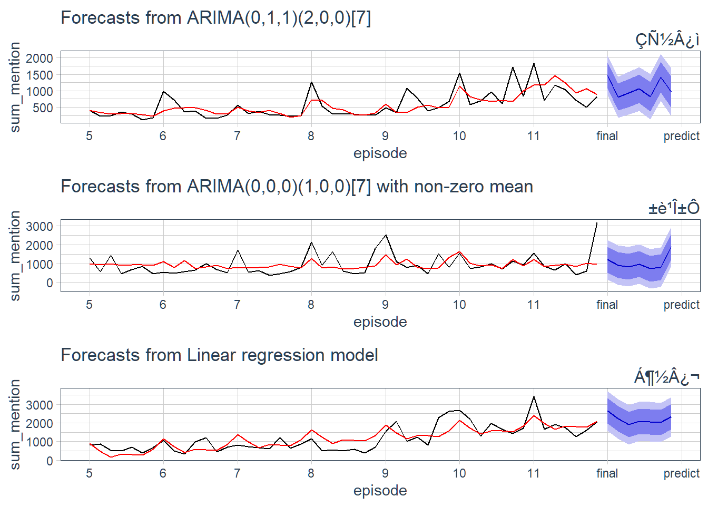
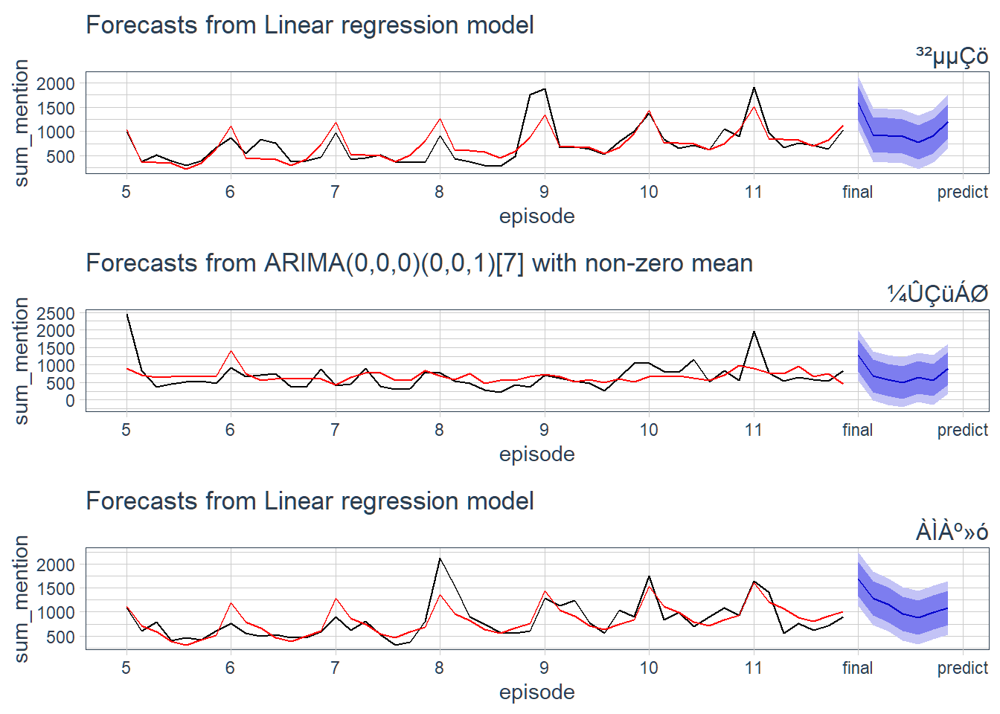
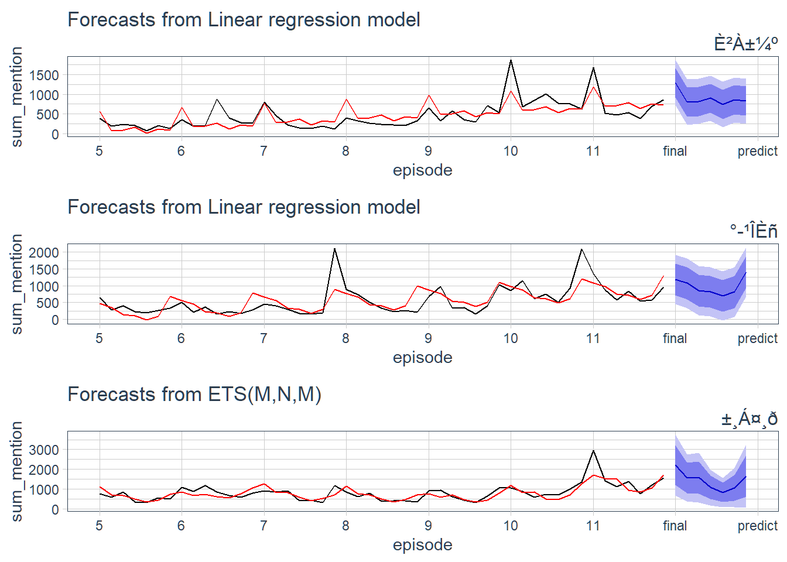
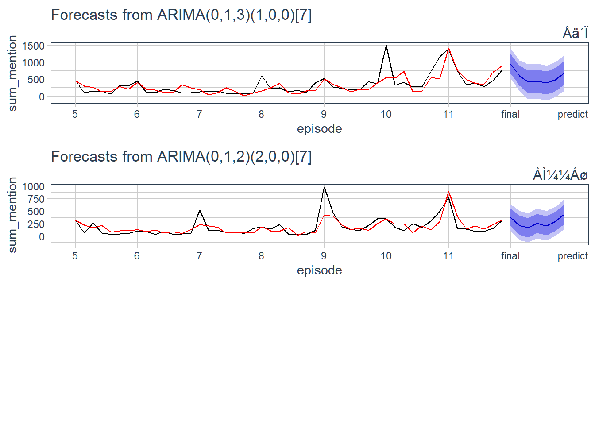

Chapter 9 연습생별 적용
지금까지 연습생들의 언급량을 총 합산한 데이터를 토대로 시계열 예측 과정을 진행하였습니다. 이 과정을 개별 연습생에 대한 언급량 데이터에 적용하여 각각의 연습생들에 적법한 모델을 찾고 그 모델을 토대로 바로 다음 시점의 언급량을 추정, 이를 대조하여 언습생들의 인기를 추측해 보겠습니다.
9.1 모델링 함수 생성
# 연습생별 최적 성능 모델 생성 함수
boy_model <- function(total, final_boy){
# 연습생 언급량 필터링 & ts 객체 변환
boy_ts <- total %>%
filter(boy == final_boy) %>%
ts(frequency = 7)
# 시계열 교차검증용 모델 지정
forecast_arima <- function(x, h){
auto.arima(x, stepwise = FALSE) %>% forecast(h = h)
}
forecast_tslm <- function(x, h){
tslm(x ~ trend + season, data = x) %>% forecast(h = h)
}
forecast_ets <- function(x, h){
ets(x) %>% forecast(h = h)
}
# 모델 평가 매트릭 함수 지정(RMSE)
RMSE <- function(y){
mean(y^2, na.rm=TRUE)^0.5
}
# 시계열 교차검증
tslm_cv_residual <- tsCV(boy_ts[, 'sum_mention'], forecast_tslm, h = 1)
ets_cv_residual <- tsCV(boy_ts[, 'sum_mention'], forecast_ets, h = 1)
arima_cv_residual <- tsCV(boy_ts[, 'sum_mention'], forecast_arima, h = 1)
# 최적 성능순 모델 이름 추출
models <- data.frame(model = c('tslm', 'ets', 'arima'),
score = c(RMSE(tslm_cv_residual), RMSE(ets_cv_residual), RMSE(arima_cv_residual))) %>%
arrange(score) %>%
.$model
# 모델 적용 함수
select_model <- function(type){
if(type == 'tslm'){
final_model <- tslm(sum_mention ~ trend + season, data = boy_ts)
}
if(type == 'ets'){
final_model <- ets(boy_ts[, 'sum_mention'])
}
if(type == 'arima'){
final_model <- auto.arima(boy_ts[, 'sum_mention'], stepwise = FALSE)
}
return(final_model)
}
# 최적 모델 적용
for(model in models){
# print(model)
final_model <- select_model(type = model)
# 잔차검정
if(checkresiduals(final_model, plot = FALSE)$p.value > 0.05){
# 테스트 통과시 for문 종료
break
}
}
# 모든 모델이 잔차검정 통과 못할 시
# 차선책으로 가장 좋은 성능을 내는 첫번째 모델 선택
if(checkresiduals(final_model, plot = FALSE)$p.value <= 0.05 && model == models[3]){
model <- models[1]
final_model <- select_model(type = model)
}
# 최적 모델, 사용된 모델명 반환
boy_model <- list(
model = final_model,
use_model = model
)
return(boy_model)
}
final <- c()
final_boy <- c()
for(final_boy in boylist){
print(final_boy)
final[[final_boy]] <- boy_model(total, final_boy)
} 연습생 개개인의 상황에 맞는 우수한 성능 모델을 찾아 잔차검정까지 마친 최적의 모델을 찾아 반환하는 boy_model()함수를 사용하여 그 결과물을 final 객체에 저장하였습니다.
9.2 사용 모델 확인
연습생들에 적용된 최적의 모델이 무엇인지 확인하겠습니다.
final %>%
purrr::map(function(x){x$use_model}) %>%
do.call(rbind, .) %>%
as.data.frame() %>%
kableExtra::kable() %>%
stringr::str_remove('V1') %>%
shiny::HTML()| 김요한 | tslm |
| 김우석 | tslm |
| 이진혁 | arima |
| 한승우 | arima |
| 김민규 | arima |
| 조승연 | tslm |
| 남도현 | tslm |
| 송형준 | arima |
| 이은상 | tslm |
| 금동현 | tslm |
| 차준호 | arima |
| 손동표 | tslm |
| 황윤성 | tslm |
| 강민희 | tslm |
| 구정모 | ets |
| 이한결 | arima |
| 송유빈 | tslm |
| 함원진 | arima |
| 토니 | arima |
| 이세진 | arima |
연습생별 최적 모델을 찾는 함수에서 지정한 use_model변수는 개별 모델을 적용할 때 사용한 모델의 이름을 저장한 변수입니다. 이 변수만을 별도로 보니 연습생별로 모델을 적용하는데 있어서 대체로 arima 모델과 시계열 회귀모델이 선택되고 ets 모델은 상대적으로 덜 선택된 것을 볼 수 있습니다. 이처럼 언급량 데이터는 성격과 형태가 유사한 데이터 이지만 데이터가 지닌 시계열적 특징에 따라 적용된 모델이 상이한 것을 확인할 수 있었습니다.
9.3 모델 시각화
개개인의 데이터에 맞춘 모델을 이전장에서 했던 유사한 시각화 방식으로 파악할 수 있습니다. 생성된 모델과 실제 데이터를 모델에 적합한 값 그리고 모델이 예측한 값을 연습생별로 시각화하여 살펴보도록 하겠습니다.
# 모델 시각화 함수 생성
library(tidyquant)
boy_plot <- function(boy){
forecast(final[[boy]]$model, h = 7) %>%
autoplot() +
autolayer(fitted(final[[1]]$model), series = 'fitted', color = 'red') +
scale_x_continuous(breaks = seq(1, 9),
labels = str_glue("{(seq(1, 7) + 4) %>% append(c('final', 'predict'))}")) +
theme_tq() +
labs(subtitle = boy, x = 'episode', y = 'sum_mention') +
theme(plot.subtitle = element_text(hjust = 1, size = 12))
}
# 연습생별 모델 그래프 저장
i = 0
final_plot <- c()
for(i in seq(1, 20)){
final_plot[[i]] <- boy_plot(boylist[i])
}